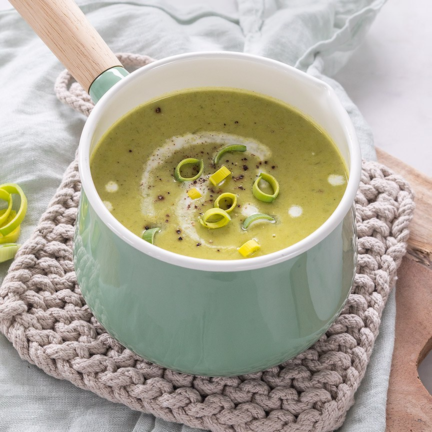

Preisoep met Aardappel
Heerlijk recept om zelf deze romige preisoep met aardappel te maken, inclusief tips voor lekkere toevoegingen.
Ingrediënten
- 400gr aardappel
- 3 preien (in ringen ca. 400 gram)
- 1 theelepel kerriepoeder
- 2 tenen knoflook
- 1 groentebouillontablet
- 700 ml water
- 1 eetlepel olijfolie
- 200ml kookroom
- Snuf zwarte peper
- olie of boter om te bakken
Bereidingswijze
- Fruit de fijngehakte knoflook aan in een soeppan met een beetje olie of boter. Voeg de aardappels in schijfjes of stukjes toe en bak een paar minuutjes mee.
- Doe dan de prei erbij en bak ook een paar minuten mee. Voeg een snuf kerrie toe. Giet het water erbij en voeg de bouillontablet toe en laat oplossen. Kook de soep ca. 15 minuten tot de aardappels goed gaar zijn.
- Pureer de soep fijn met een staafmixer. Voeg de room toe en roer er doorheen. Breng de soep op smaak met een snuf peper en indien nodig een beetje zout.

Tip Voeg eventueel wat garnaaltjes, gerookte zalm snippers of gebakken spekjes toe.